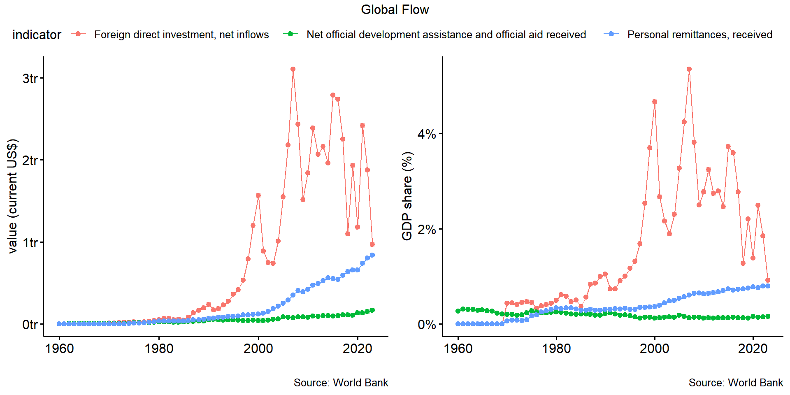
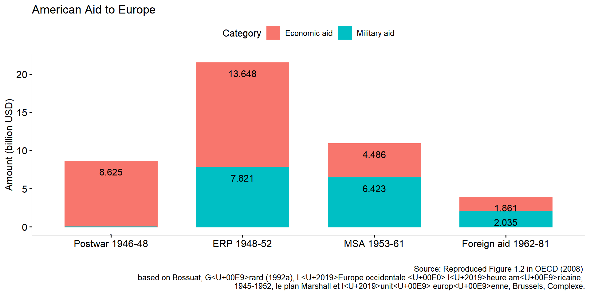
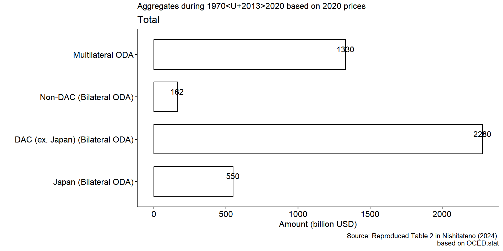
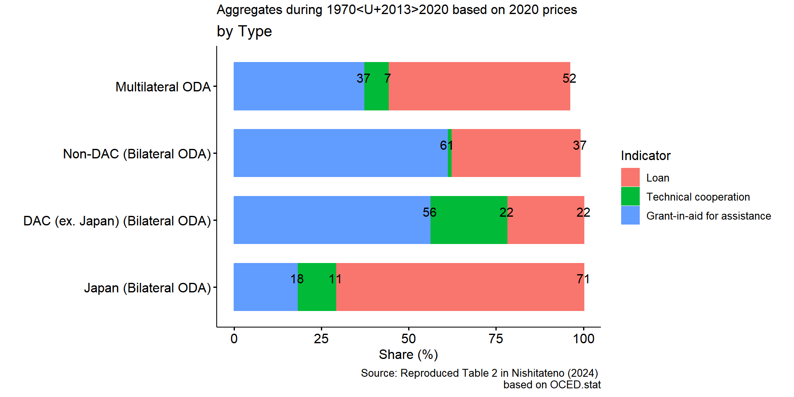
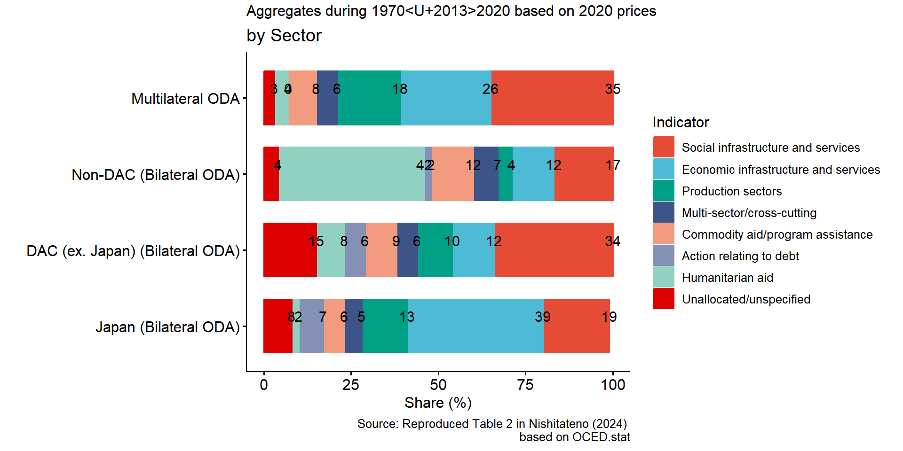

2025-11-17


Japan joined DAG in 1960, became founding member of OECD-DAC in 1961
Japan joined Colombo Plan in 1954,
Since 1970s:
Japan ODA charter (1992) list philosophies of Japan’s ODA
| Aspect | Japan’s ODA Approach | Typical DAC / Western Approach |
|---|---|---|
| Development Philosophy | “Ingredients approach” – emphasizes tangible inputs (infrastructure, technology, industry) | “Framework approach” – focuses on institutions, policy reform, governance |
| Economic Role of the State | Active state-led industrialization and strategic planning | Market-driven liberalization, minimal state intervention |
| Aid Objectives | Promote productive capacity, trade, and growth in Asia | Prioritize poverty reduction, welfare, and governance reforms |
| Aid Modality | Loans and technical cooperation, often tied to Japanese firms | Predominantly grants, focused on social sectors |
| Underlying Logic | Development as self-help and partnership — supporting recipient ownership through economic buildup | Development as policy reform and conditionality — supporting institutional change |



New Development Cooperation Charter